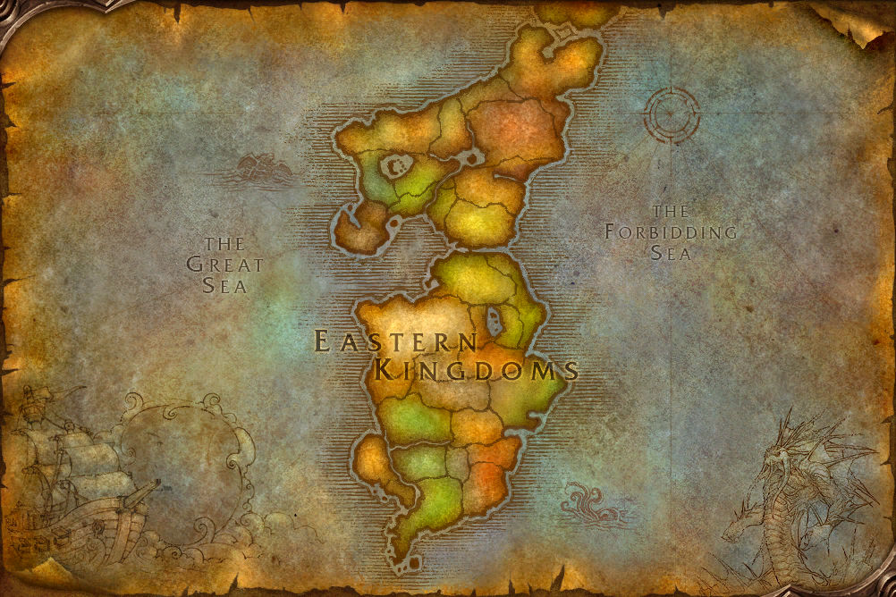

♛ Capitals⚔ Dungeons⌂ Towns✧ Landmarks❧ Regions (filter)Dashed border = exact entrance / placement not independently established

Continent artwork could not load. Open the map image.

Pins use game-client map coordinates where available. A fine tether shows the real coordinate when nearby symbols must be separated for readability. Region centers and unverified dungeon entrances are identified in the ledger.
Map artwork © Blizzard Entertainment, from the WoW Forever client. Coordinate data and map assembly: peligwen/peligaming, build 1.60.1.69913. Cross-check: WoW Forever Map.
Places Written in the Chronicle
The Cartographer's Note. Every visit comes from a published chapter. The continent geometry is the actual WoW Forever client map, with marker coordinates derived mathematically from the client map records. Where exact individual dungeon portals remain unconfirmed, the keeper records the uncertainty instead of substituting a false pin. Regions are intentionally hidden until selected in the filter.
❦ The Oath Outlives the Crown ❦